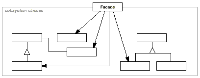

class Scanner {
public:
Scanner(istream&);
virtual ~Scanner();
virtual Token& Scan();
private:
istream& _inputStream;
};
class Parser {
public:
Parser();
virtual ~Parser();
virtual void Parse(Scanner&, ProgramNodeBuilder&);
};
class ProgramNodeBuilder {
public:
ProgramNodeBuilder();
virtual ProgramNode* NewVariable(
const char* variableName
) const;
virtual ProgramNode* NewAssignment(
ProgramNode* variable, ProgramNode* expression
) const;
virtual ProgramNode* NewReturnStatement(
ProgramNode* value
) const;
virtual ProgramNode* NewCondition(
ProgramNode* condition,
ProgramNode* truePart, ProgramNode* falsePart
) const;
// ...
ProgramNode* GetRootNode();
private:
ProgramNode* _node;
};
class ProgramNode {
public:
// program node manipulation
virtual void GetSourcePosition(int& line, int& index);
// ...
// child manipulation
virtual void Add(ProgramNode*);
virtual void Remove(ProgramNode*);
// ...
virtual void Traverse(CodeGenerator&);
protected:
ProgramNode();
};
class CodeGenerator {
public:
virtual void Visit(StatementNode*);
virtual void Visit(ExpressionNode*);
// ...
protected:
CodeGenerator(BytecodeStream&);
protected:
BytecodeStream& _output;
};
void ExpressionNode::Traverse (CodeGenerator& cg) {
cg.Visit(this);
ListIterator i(_children);
for (i.First(); !i.IsDone(); i.Next()) {
i.CurrentItem()->Traverse(cg);
}
}
class Compiler {
public:
Compiler();
virtual void Compile(istream&, BytecodeStream&);
};
void Compiler::Compile (
istream& input, BytecodeStream& output
) {
Scanner scanner(input);
ProgramNodeBuilder builder;
Parser parser;
parser.Parse(scanner, builder);
RISCCodeGenerator generator(output);
ProgramNode* parseTree = builder.GetRootNode();
parseTree->Traverse(generator);
}